Marching Cubes devlogMarching Models |
Main page |
| Updated: 9/2024 |
I wanted to add a way of loading models from blender as actual marching cubes geometry.
First, I needed some way of determining if a point is inside or outside of the model. I already use assimp to load the model into triangles, so really all I need is to figure out if a point is inside a mesh.
After some research, I saw I should trace a ray in a random direction. If it intersects the geometry an even number of times, it is outside. If the number is uneven, then the point is inside the mesh. But how do I actually do this ray tracing?
Much like when implementing physics, I quickly discovered I should probably rely on some external library, as the algorithms are not trivial at all. I settled on embree, as it seemed very simple to do what I needed.
Unfortunately their website is on embree 3 while the code is on embree 4, so I had to dig into the code and the release notes to see what I needed to use. In the end, I managed to make this example:
// setup
RTCDevice device = rtcNewDevice(nullptr);
// check if device is null...
RTCScene scene = rtcNewScene(device);
RTCGeometry mesh = rtcNewGeometry(device, RTC_GEOMETRY_TYPE_TRIANGLE);
// add vertices and indices
float* vertexBuffer = (float*)rtcSetNewGeometryBuffer(mesh, RTC_BUFFER_TYPE_VERTEX, 0, RTC_FORMAT_FLOAT3, sizeof(glm::vec3), vertices.size());
std::memcpy(vertexBuffer, vertices.data(), sizeof(glm::vec3) * vertices.size());
unsigned int* indexBuffer = (unsigned int*)rtcSetNewGeometryBuffer(mesh, RTC_BUFFER_TYPE_INDEX, 0, RTC_FORMAT_UINT3, 3 * sizeof(unsigned int), indices.size() / 3);
std::memcpy(indexBuffer, indices.data(), sizeof(unsigned int) * indices.size());
// Commit geometry changes
rtcCommitGeometry(mesh);
rtcAttachGeometry(scene, mesh);
rtcReleaseGeometry(mesh);
// Commit scene changes
rtcCommitScene(scene);
intersect(.....);
// cleanup
rtcReleaseScene(scene);
rtcReleaseDevice(device);unsigned int intersect(...) {
// Ray structure
RTCRayHit rayHit;
rayHit.ray.org_x = ...;
rayHit.ray.org_y = ...;
rayHit.ray.org_z = ...;
rayHit.ray.dir_x = ...;
rayHit.ray.dir_y = ...;
rayHit.ray.dir_z = ...;
// example values
rayHit.ray.tnear = 0.0f;
rayHit.ray.tfar = std::numeric_limits<float>::infinity();
// example values
rayHit.ray.time = 0.0f; // Time of the ray for motion blur
rayHit.ray.mask = -1; // Mask to select geometry
rayHit.ray.id = 0; // Ray ID
rayHit.ray.flags = 0; // Flags
unsigned int intersections = 0;
// ugly but works
while (true) {
// reset hit struct
rayHit.hit.geomID = RTC_INVALID_GEOMETRY_ID;
rayHit.hit.primID = RTC_INVALID_GEOMETRY_ID;
rayHit.hit.instID[0] = RTC_INVALID_GEOMETRY_ID;
rtcIntersect1(scene, &rayHit);
if (rayHit.hit.geomID != RTC_INVALID_GEOMETRY_ID) {
// here, ray has intersected
intersections++;
// move the ray forward a bit so it doesn't intersect the same point over and over again
rayHit.ray.org_x += rayHit.ray.tfar + EPSILON;
rayHit.ray.tfar = ...; // reset far distance, sice it was changed to give us the result
} else {
break;
}
}
return intersections;
}Visualizing the results from this funcion at intersecting a sphere, in blender:
The left cube is the ray origin, the other one is the first intersection with the sphere
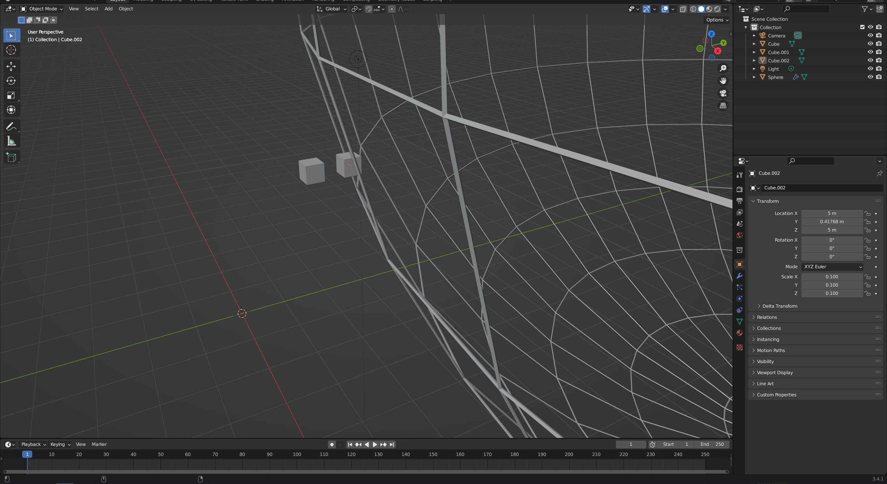
The next intersection happened at the other side of the sphere
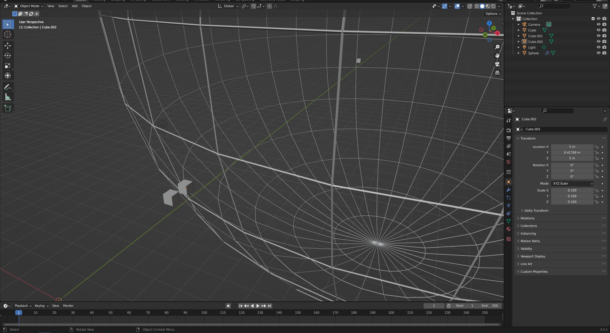 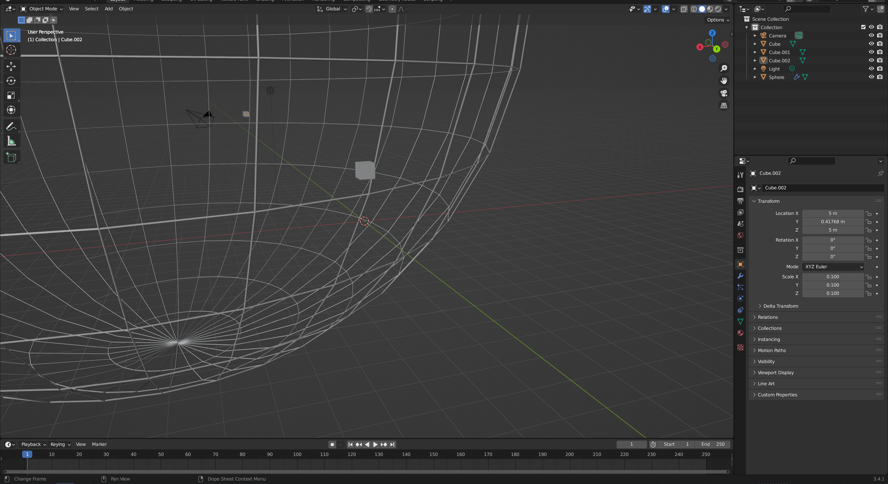
To keep it simple, I just store the results like this:
uint32_t len_x, len_y, len_z; // len of the grid dimentions
bool *corners; // [y][z][x] grid of boolean valuesTo load this into the world:
for (uint32_t y = 0; y < obj.len_y; y++) {
for (uint32_t z = 0; z < obj.len_z; z++) {
for (uint32_t x = 0; x < obj.len_x; x++) {
switch (obj.get(x, y, z)) {
case true:
setBit(pos + glm::ivec3(x, y, z));
break;
case false:
learBit(pos + glm::ivec3(x, y, z));
break;
}
}
}
}Basically, I just iterate over each corner and set it in the world.
The setBit function is pretty simple:
// sometimes a corner 'belongs' to many chunks, that is,
// its position needs to be set in more than one chunk
// so I add +-1 just to guarantee that if needed neighbor chunks will be checked
for (int x = -1; x <= 1; x++) {
for (int y = -1; y <= 1; y++) {
for (int z = -1; z <= 1; z++) {Get the chunk it belongs to:
// I use an array of chunks for now. I have to do weird math due to (0,0,0) being at a negative corner of the world and not the center
// since I do +-1 above this, I could end up on chunks that do not exist, so I have to clamp the result
// the index is a GLuint, so clamp to 0 is free, but not the clamp to MAX
// instead of calling clamp() and providing the minimum value for no reason,
// I can just do & MASK to set the bits belonging to large numbers to 0
Chunk *chunk = &chunks
[(static_cast<GLuint>((static_cast<GLfloat>(position.x) / CHUNK_SIZE_CORNERS_FLOAT) + (WORLD_SIZE_X_FLOAT / 2.0f)) + x) & WORLD_SIZE_X_MASK]
[(static_cast<GLuint>((static_cast<GLfloat>(position.y) / CHUNK_SIZE_CORNERS_FLOAT) + (WORLD_SIZE_Y_FLOAT / 2.0f)) + y) & WORLD_SIZE_Y_MASK]
[(static_cast<GLuint>((static_cast<GLfloat>(position.z) / CHUNK_SIZE_CORNERS_FLOAT) + (WORLD_SIZE_Z_FLOAT / 2.0f)) + z) & WORLD_SIZE_Z_MASK];Now, given this chunk, get the relative position inside it:
const glm::ivec3 chunkpos = getChunkCoords(chunk);
// all I have to do is subtract the world position from the position of the chunk in the world
const glm::ivec3 relpos = position - chunkpos;
// could happen that it does not belong to the chunk, so I have to do this check
const glm::u8vec3 finalpos = glm::u8vec3(relpos);
// check if the position is actually inside the chunk
if (finalpos.x > CHUNK_SIZE || finalpos.y > CHUNK_SIZE || finalpos.z > CHUNK_SIZE) {
// then it does not belong to this chunk, do nothing
} else {
chunk->addCornerAt(finalpos, 1);
}
}Loading a sphere 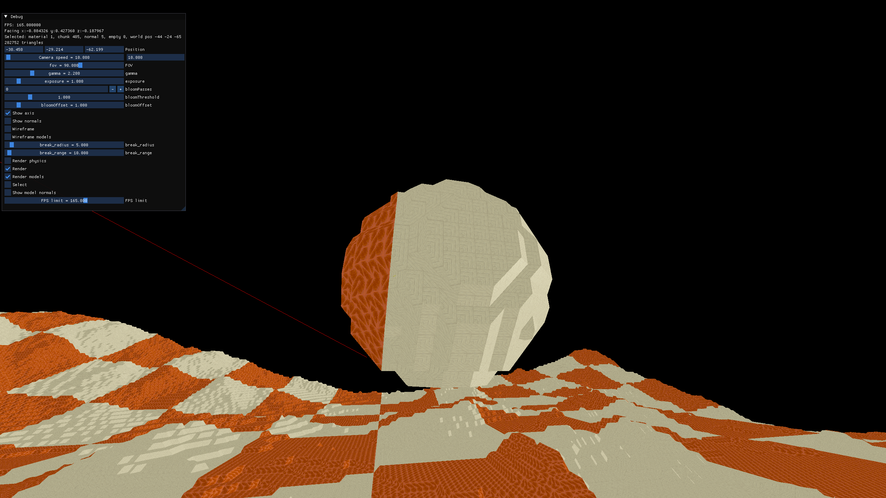
Loading the cone monkey 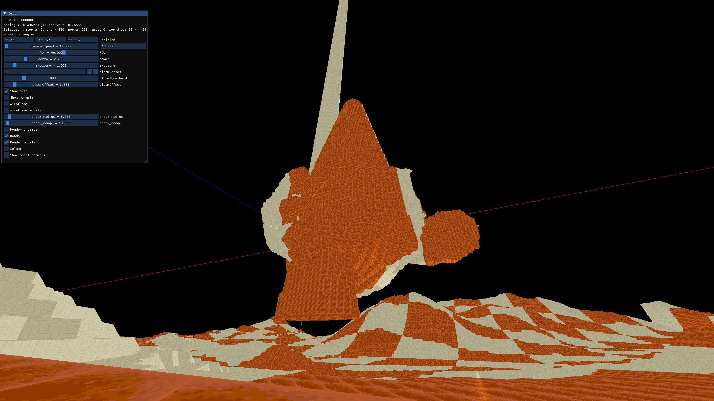 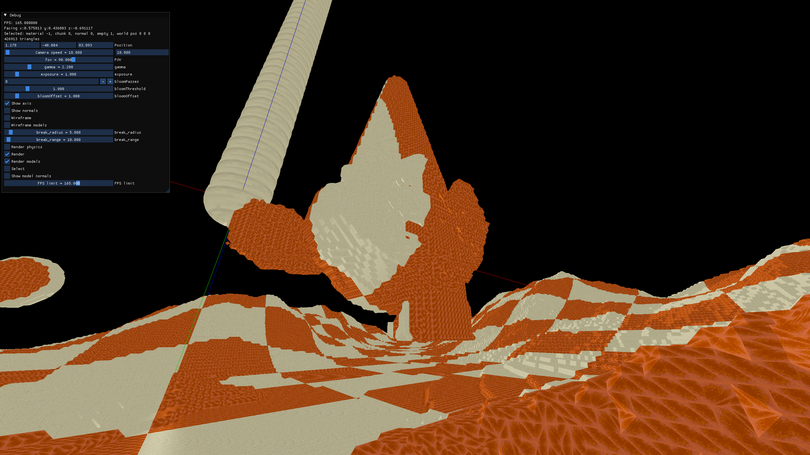
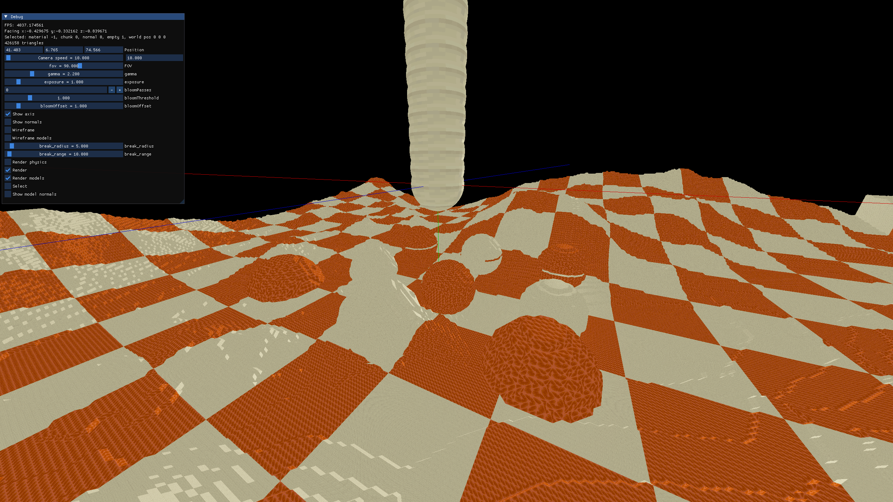 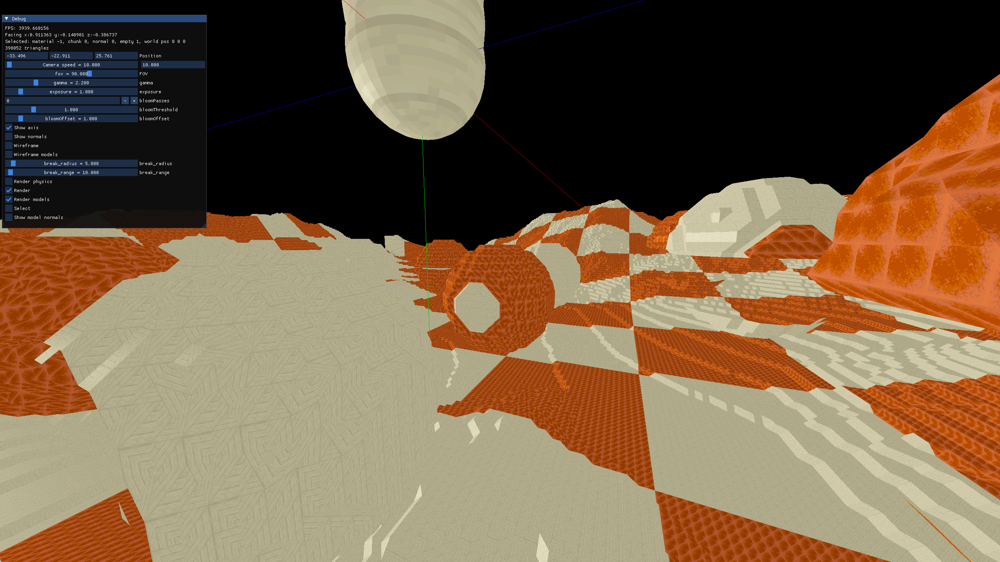 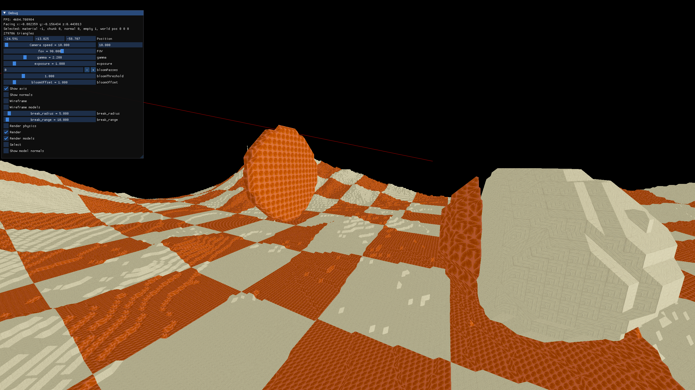 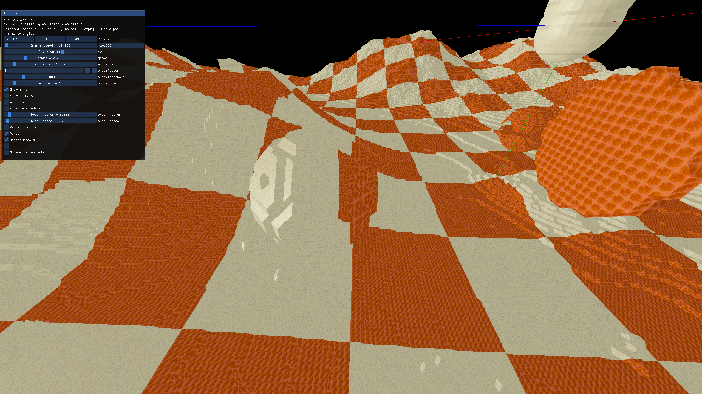 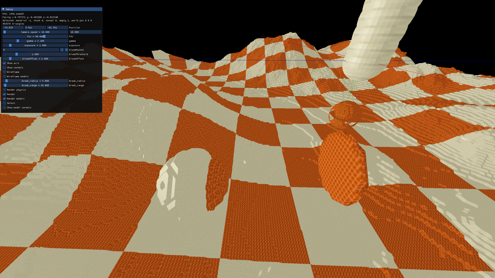 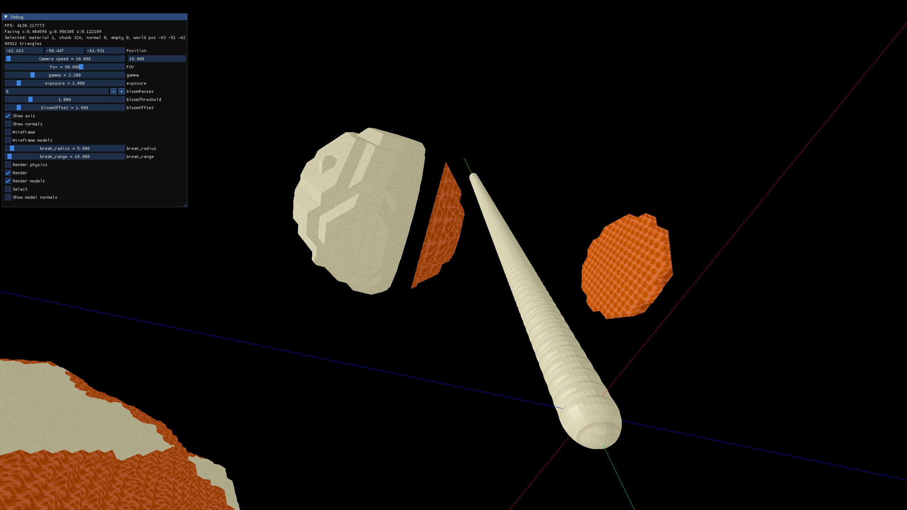 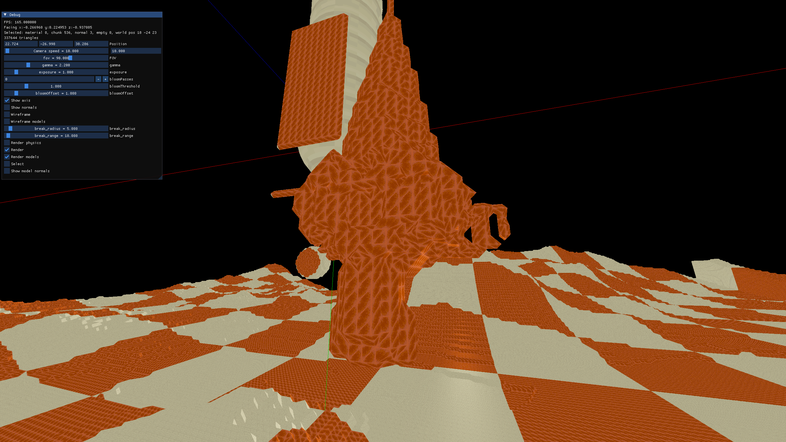
Complex geometry has holes due to random chance of the rays hitting it at that spot or not, unsure how to fix for now. Maybe send N rays all in random directions?
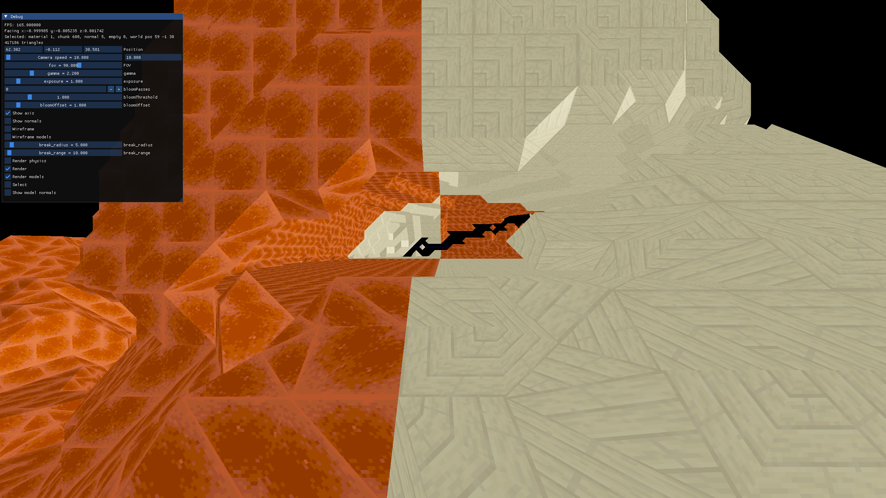 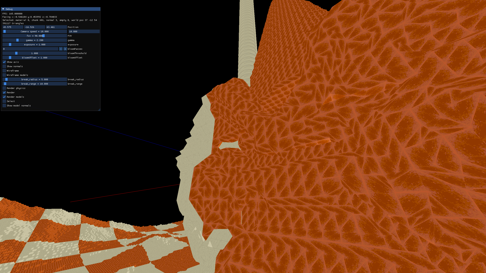
As you can see, everything in the implementation is terrible. It was actually more difficult than I expected, so I prioritized doing it the easy way so it could get done at all. In the future I think I can optimize this heavily if needed, starting by setting the bits up to 32 at once doing bitwise operations, instead of setting them 1 by 1.